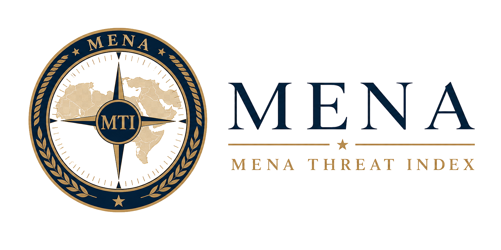

Border-Neighbor Threat Index
Continuous threat posture across Turkiye's bordering states.
RepositoryAnkara, Turkiye
Strategic Data Company of Ankara publishes standing open-source threat assessments with traceable inputs, fixed scoring doctrine, and scheduled refresh cycles.
The Indices
Each index is designed as a public institutional reading: a consistent collection boundary, a stable category taxonomy, and a published score surface that analysts can inspect.
Continuous threat posture across Turkiye's bordering states.
RepositoryComparable geopolitical pressure readings across 195 countries and 13 blocs.
Repository
Regional risk assessment for the Middle East and North Africa.
RepositoryMethod
Ingest lawful public reporting and preserve source, time, geography, and subject context.
Map each item into published categories so readings can be compared across cycles.
Apply deterministic weights after classification. The model classifies; the arithmetic remains stable.
Refresh the public assessment on schedule with visible provenance and consistent language.
Institutional posture
The SDCofA identity is deliberately separate from the modern technology language of the wider group: engraved navy, antique gold, letter-spaced titling, and a sober publication standard.
Country risk almanac
The almanac is a deterministic publication surface: country reference pages, method notes, and future score tables generated from data files and templates rather than model-written prose.
A Monarch Castle company